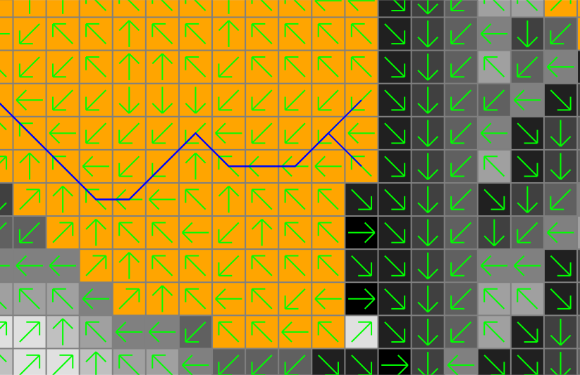

r.lfp can read outlet coordinates from the coordinates and/or outlet parameters. For multiple outlets, the user can assign a unique ID to each longest flow path per outlet point using id, id_column, and outlet_id_column parameters. The id parameter specifies unique IDs for all outlets given in the coordinates parameter in the same order. The outlet_id_column specifies a column in the outlet map that contains unique IDs to be copied over to the id_column column in the output map.
Create the longest flow path for one outlet:
# set computational region g.region raster=elevation -p # calculate drainage directions r.watershed elevation=elevation drainage=drain_directions # calculate outlet point related watershed r.water.outlet input=drain_directions output=basin coordinates=642455,222614 # calculate longest flow path r.lfp input=drain_directions output=lfp coordinates=642455,222614
Note that there can be more than one longest flow path when multiple paths have the same flow length. In fact, the above example produces two lines with the same length.

There are different ways to calculate multiple longest flow paths in one run:
# calculate longest flow paths at two outlets
r.lfp input=drain_directions output=lfp coordinates=642455,222614,642306,222734
# calculate longest flow paths at two outlets and assign IDs
r.lfp input=drain_directions output=lfp coordinates=642455,222614,642306,222734 \
id=1,2 id_column=lfp_id
# calculate longest flow paths at all points in the outlets map
r.lfp input=drain_directions output=lfp outlet=outlets
# calculate longest flow paths at all points in the outlets map and assign IDs using a column in this map
r.lfp input=drain_directions output=lfp outlet=outlets \
id_column=lfp_id outlet_id_column=outlet_id
# calculate longest flow paths at given coordinates and all points in the outlets map and assign IDs
r.lfp input=drain_directions output=lfp coordinates=642455,222614,642306,222734 outlet=outlets \
id=1,2 id_column=lfp_id outlet_id_column=outlet_id
Calculate the longest flow paths for sub-watersheds:
# get nsres
eval `r.info -g map=elevation`
# delineate streams using a threshold
r.stream.extract elevation=elevation threshold=50000 stream_vector=streams
# populate stream lengths
v.db.addcolumn map=streams columns="length real"
v.to.db map=streams option=length columns=length
# create points along the streams starting from downstream
v.to.points -r input=streams output=stream_points dmax=$nsres
# find outlets (downstream-most less nsres points)
cats=`db.select -c sql="select stream_points_2.cat from stream_points_2 \
inner join stream_points_1 on stream_points_1.cat = stream_points_2.lcat \
where length-along > 0.5*$nsres and length-along < 1.5*$nsres"`
cats=`echo $cats | tr " " ,`
v.extract input=stream_points layer=2 cats=$cats output=stream_outlets
# create the longest flow paths for all outlets
r.lfp input=drain_directions output=lfp id_column=id outlet=stream_outlets layer=2 outlet_id_column=lcat